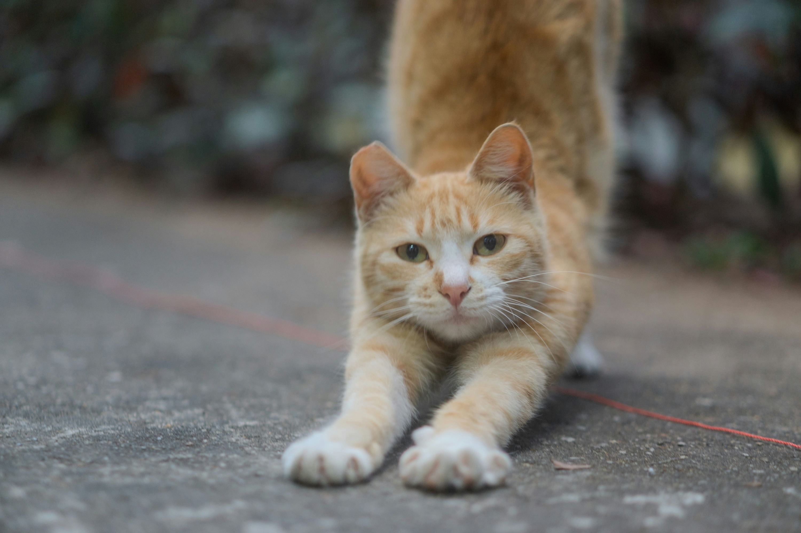

What Are Domestic Cats?
Domestic cats (Felis catus) have lived alongside humans for thousands of years. Today they are one of the world's most popular pets because of their affectionate personalities, playful behavior, and adaptability.
A beginner's guide to happy, healthy cats.
Domestic cats (Felis catus) have lived alongside humans for thousands of years. Today they are one of the world's most popular pets because of their affectionate personalities, playful behavior, and adaptability.
It's argued that cats domesticated themselves, forming a mutual relationship with humans. Early farming communities welcomed cats because they naturally hunted rodents that threatened food supplies, eventually becoming domestic.
A cat's whiskers help it judge whether it can fit through narrow spaces.
Cats often purr when they are relaxed, although they may also purr when stressed or recovering from injury.
Cats can see much better than humans in low light, making them awesome nighttime hunters.

Cats have flexible spines, powerful back legs, retractable claws, excellent balance, and highly sensitive hearing that helps them locate prey.
See Britannica for more information on the origin